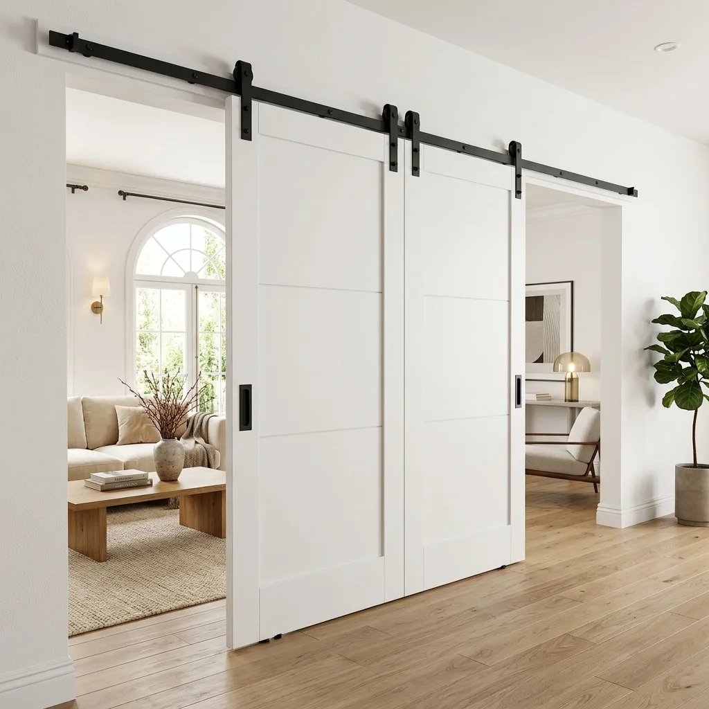
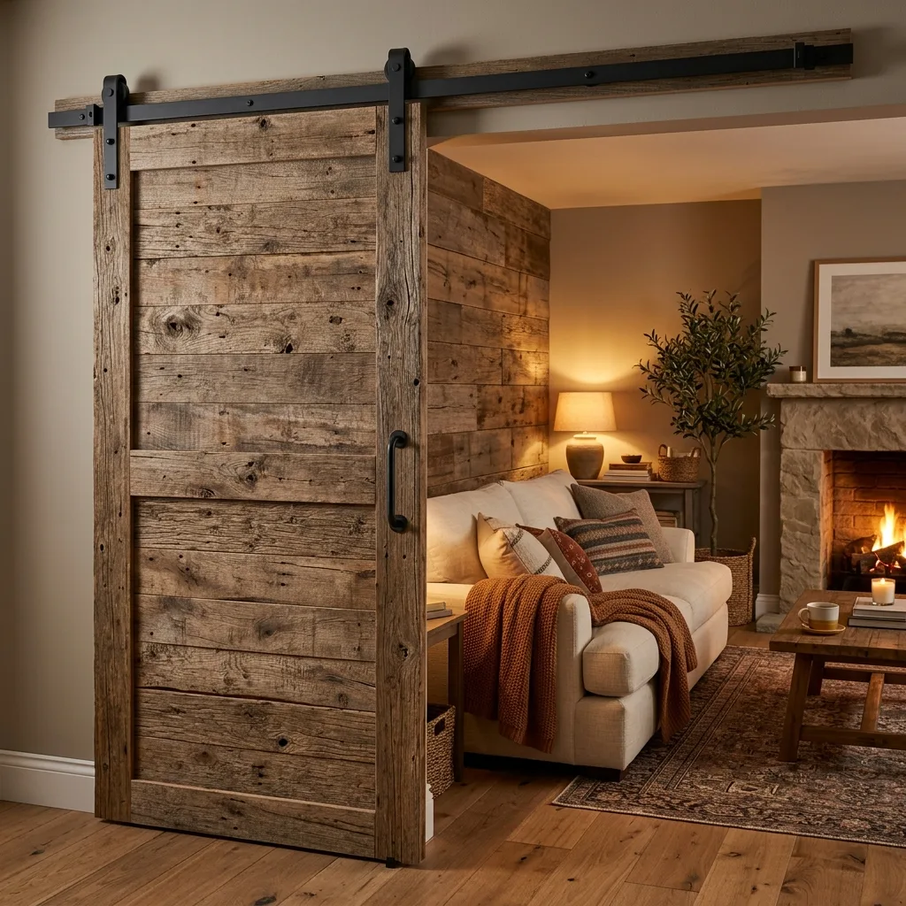
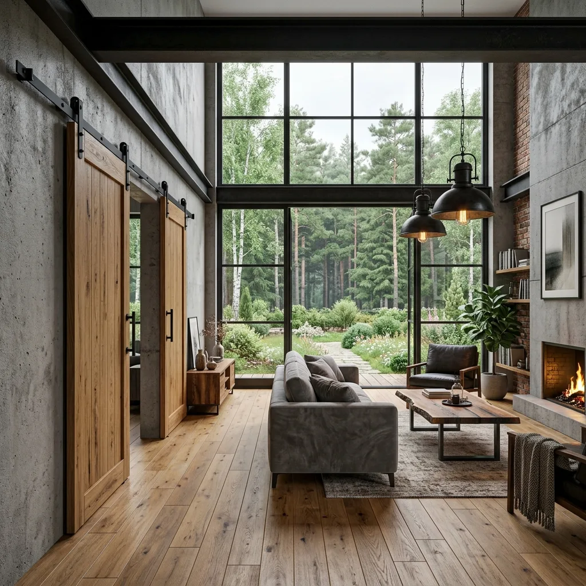
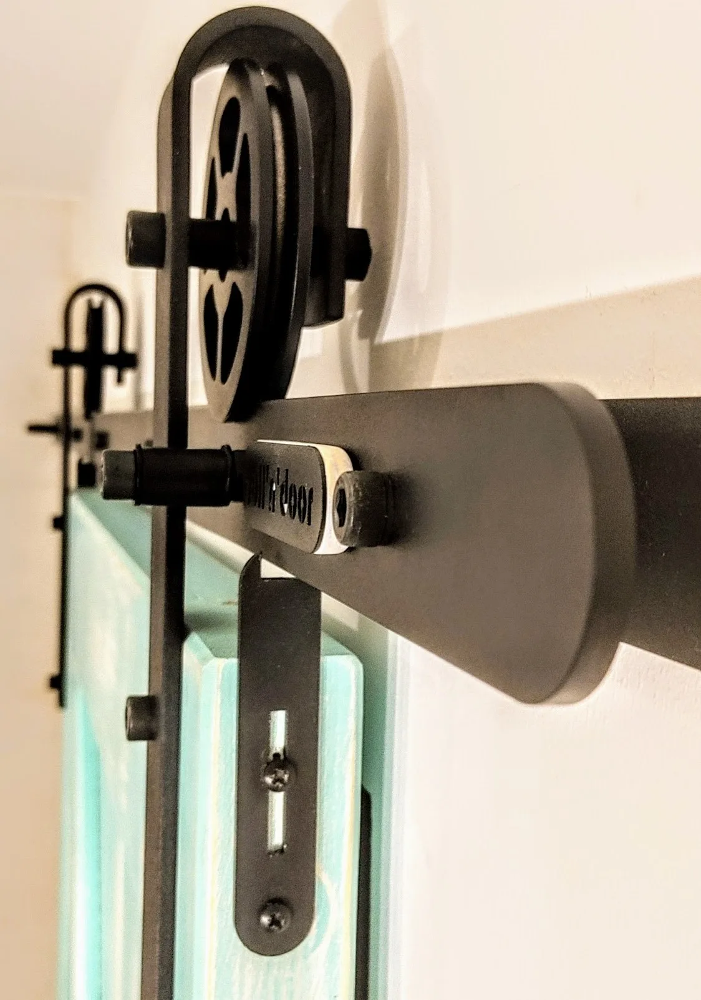

Minden szettünk dupla sínnel érkezik.
Fedezd fel a Roll’n’Door egyedi tervezésű tolóajtóit. Tökéletes stabilitás, kompromisszumok nélküli minőség az otthonodba tervezve.
Kérj ajánlatotNem tömegcikket árulunk. Minden vasalatot és ajtót a te egyedi igényeidre, falaidra és stílusodra szabunk.
Egyedülálló rendszerünk megakadályozza a kilengést. Kiváló minőségű görgők és konzolok garantálják a sima, hangtalan csúszást évtizedeken át. Más rendszerekben csak egy sín van. Nálunk kettő.
Olyan ajtólapokat és vasalatokat készítünk, amilyet megálmodtál. Bármilyen RAL vagy NCS színben kérheted a festést, és a méretekben is rugalmasak vagyunk.
Csomagodban pontosan olyan csavarokat és tipliket küldünk, amire a faladnak szüksége van. Akár másnapi kiszállítással GLS-en keresztül.
Hét lépés. Végig tudod, hol tartunk.
Küldd el, mit szeretnél, akár pár sorban.
Visszahívunk, és átbeszéljük a részleteket.
Az ajánlatot e-mailben küldjük el.
Ha tetszik az ajánlat, előleget fizetsz, és indul a munka.
Megmutatjuk, hogy fog kinézni az ajtód. Te hagyod jóvá.
Legyártjuk az ajtót. Ez kb. 4 hét.
Nálad szereljük be, az egész országban.
Inspirálódj korábbi munkáinkból! Kattints a képekre a nagyításhoz.




Vagy írj pár sort:
Kérdésed van, vagy egyedi felmérést szeretnél? Keress minket bizalommal!
Országos kiszállítás